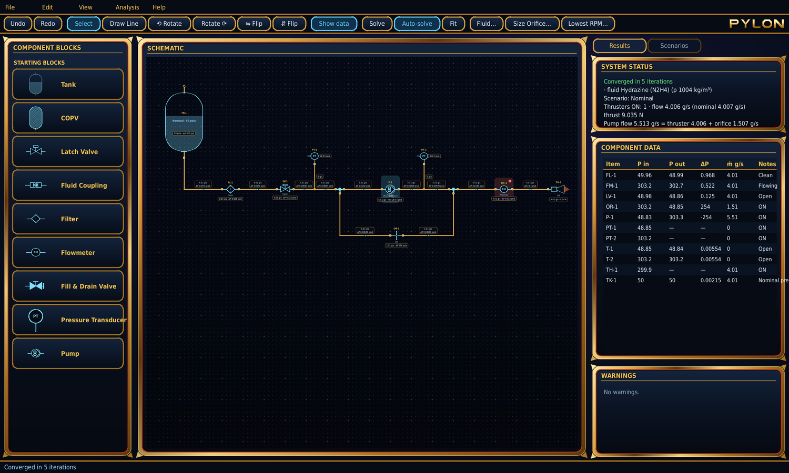
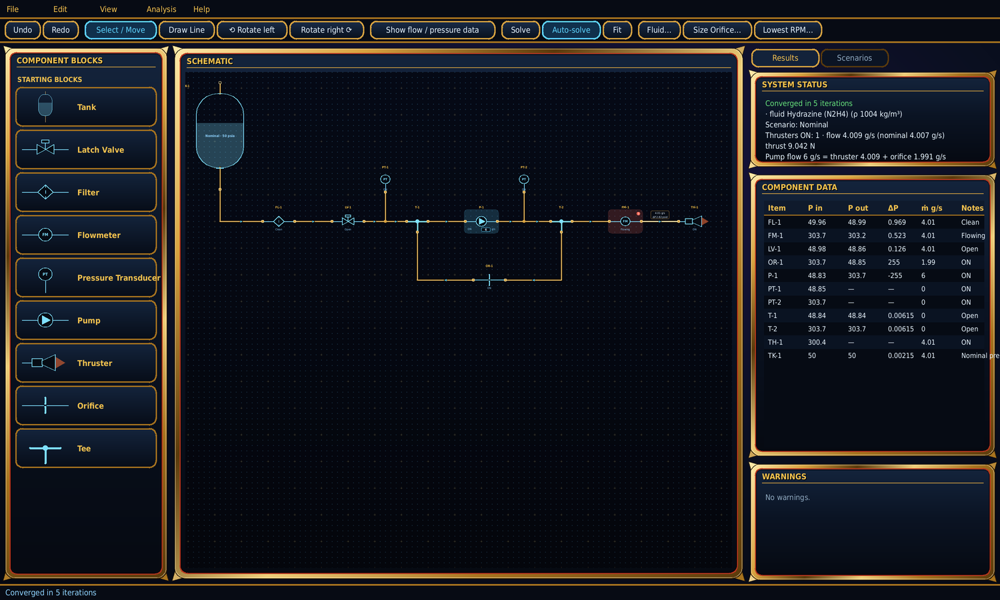
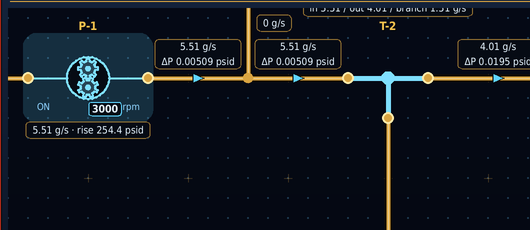

Pylon
Draw a spacecraft liquid-propulsion feed system from drag-and-drop components and solve it as a steady, incompressible flow network — every tube's mass flow and pressure drop, pump operating points, bypass-orifice sizing and scenario studies, in one Python program.

The built-in example: a blowdown tank feeding a pump, with a bypass orifice back to the pump inlet, a flowmeter and a thruster.
Features
Schematic editor
Tank, COPV, latch valve, fluid coupling, filter, flowmeter, fill & drain valve, transducer, pump, thruster, orifice, tee, cross and 90° fitting. A COPV backfills tank ullage pressure. Click a block's centre to toggle its state; save your own blocks to a reusable library.
Plumbing that stays clear
Orthogonal tubes route around every component. Draw section by section, drag segments, add or delete segments, combine lines and tap one line into another. Set each line's length and bend table independently of its route, name it, and save it to the library.
Flow on every tube
Mass flow and inlet-to-outlet ΔP beside each tube and component, transducer readings, and warnings when a part exceeds its pressure limits.
Pump curves
Import one curve per RPM from CSV. An ON pump follows its curve at the set speed, so its outlet pressure settles where the pump curve meets the system.
Sizing and scenarios
Size a pump-bypass orifice so pump flow = thruster flow + back flow — per scenario or one diameter for all — and find the lowest pump RPM that meets demand.
Built for iteration
Save connected parts as lockable assemblies, undo/redo, copy/paste of groups, rotate and flip, Small / Medium / Large icons, show or hide all data (hover to peek, per-item overrides), PNG and black-and-white line-drawing export (SVG, PDF, PNG), and an error log with one-click error reports.
Physics basis
Models
- Adiabatic, incompressible flow; working fluid hydrazine (1004 kg/m³, 0.90 mPa·s at 25 °C).
- Tube friction: Darcy–Weisbach with the Churchill (1977) friction factor, laminar through turbulent.
- Fittings and bends: Crane TP-410 K = n·f_T with two-K laminar terms; contraction and expansion at size changes.
- Valves, filters, flowmeters, thrusters: equivalent sharp-edged orifice, ṁ = Cd·A·√(2ρΔP); orifice blocks Cd = 0.6.
- Thrust F = ṁ·Isp·g₀ into a fixed 0 psia exhaust.
Solver and checks
- Node pressures and element flows solved together by damped Newton–Raphson with line search.
- Every equation in the code cites its source.
--selftestchecks orifice flow, Hagen–Poiseuille, Colebrook, the Cv relation, mass balances, orifice sizing and pump-curve interpolation.
Gallery

Data hidden for a clean drawing — hover any tube or component to see its numbers.

The pump runs on its curve at the speed set on the block.
Get started
# Python 3.9+ pip install PySide6 numpy python pylon.py # opens the built-in example python pylon.py my_system.pylon.json # open a saved schematic python pylon.py --selftest # physics and solver checks, no GUI
Example pump curves: examples/example_pump_curves.csv · Full documentation: user guide